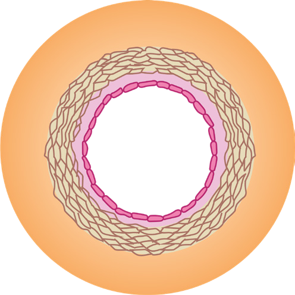

103
Student’s Book - Form Two

Biology for Secondary Schools
Table 5.1: Adaptation of the heart to its functions
Adaptive feature
Function
Muscular walls
Contract to pump blood
Cardiac muscles
Contract and relax continuously without getting fatigued to ensure continuous pumping of the blood
Valves
Ensure blood flows in one direction
Septum
Separates the left and right sides of the heart to prevent mixing of oxygenated and deoxygenated blood
Sinoatrial node
Sets time and rate of contraction of cardiac muscles
Coronary artery and coronary vein
The coronary artery nourishes the heart and supplies it with oxygen. The coronary vein removes waste that would harm the heart if left to accumulate
Connection with pulmonary artery and pulmonary vein
Enables the heart to pump out deoxygenated blood to the lungs and receives oxygenated blood from the lungs
Pericardial fluid
Prevents friction as the heart beats
Connection with vena cava and aorta
Enables the heart to receive deoxygenated blood and pumps out oxygenated blood
Blood vessels
Task 5.3
Search the library and internet sources
for the structure of arteries, veins and
capillaries. Write short notes describing
their structure.
Blood vessels are channels through which blood is distributed to various parts of the body. They are distributed throughout the body. Mammals have three types of blood vessels, namely arteries, veins, and capillaries.
Arteries
Arteries are thick-walled, muscular, and
elastic vessels that transport blood from
the heart to all parts of the body (Figure
5.3). All arteries transport oxygenated
blood, except the pulmonary artery,
which transports deoxygenated blood
from the heart to the lungs.
Fibrous layer
Smooth muscles and elastic fibres
Basement membrane
Endothelium
Lumen

Figure 5.3: Cross-section of an artery
08/04/2026 10:18:29